金秋10月，睿晟全体小伙伴迎来了第一次团队outing，激动之情溢于言表！第一次的出游，我们就去了大热的旅游地—普吉岛，开启了5天4夜游行程。
26日晚，团队的小伙伴们分别从北京、上海、深圳出发，于凌晨抵达普吉岛。导游早早就在机场外面等候我们了，北京团队的小伙伴率先到达，把行李装到大巴后就朝酒店出发了。老板们为了让大家有一个难忘的团队出游，特地为大家安排了当地的5星酒店—Moevenpick Karon SPA度假酒店入住。
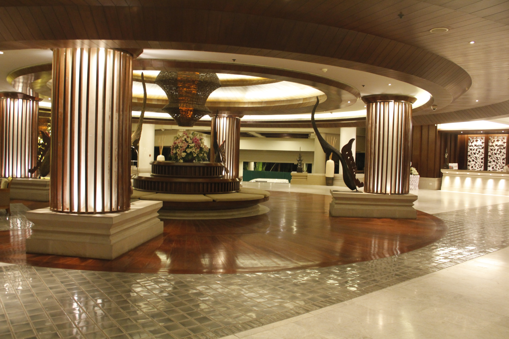
酒店后面就是卡伦海滩，站在房间的大阳台上就可以眺望卡伦海滩。
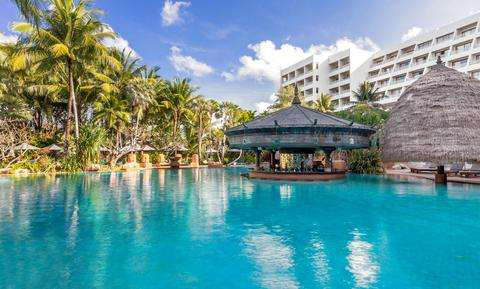
整个酒店像个天然氧吧，随处可见的热带植物，让大家对这次旅行充满期待。
Day 1：早上8点，大家活力满满地迎来了公司的年中总结，各部门的leader向老板汇报了工作，老板们对大家的工作表示了认可，同时也向大家展望了公司未来的发展方向，增强了员工与老板之间的信任。
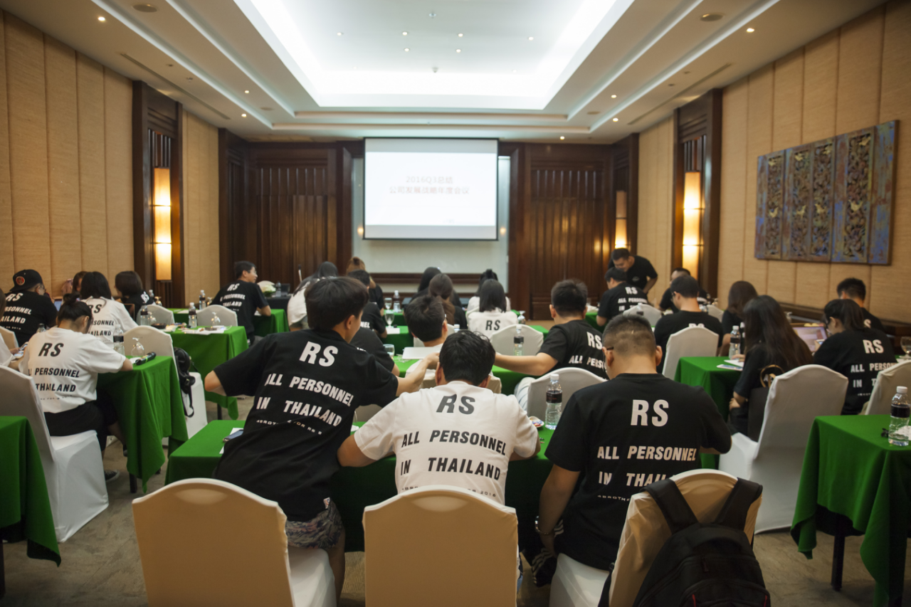
12点会议结束后，大家上了大巴前往KING POWER国际免税店，在“买买买“剁手之前，当务之急就是填饱肚子。来到了King Power，必须要品尝的就是自助餐，这也是KingPower免税店的一大亮点，在你疯狂购物前为你补充所有能量。
疯狂购物后，RS小伙伴们随着大巴来到了查龙寺，这里是普吉岛最大的佛教寺院。整个寺庙结合了泰国南部、中部和东北部的建筑风格，各具特色。
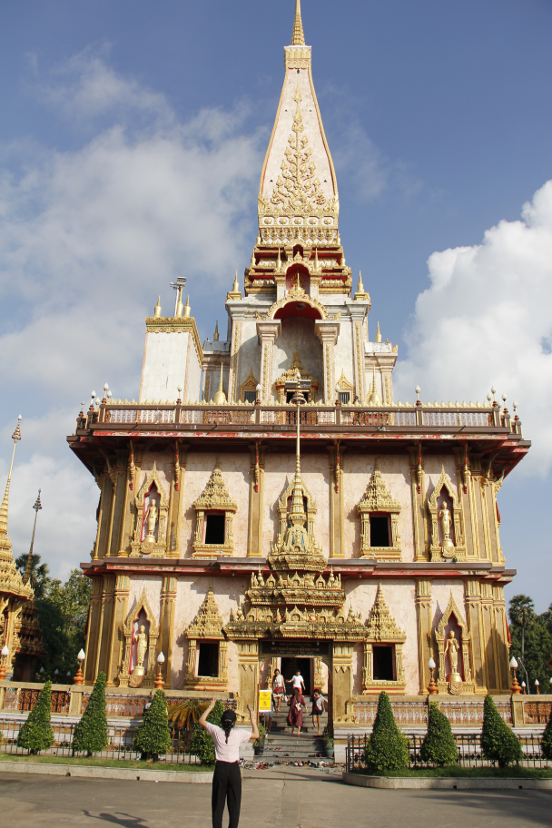
感受完当地的佛教文化后，RS小伙伴就随着大巴去了神仙半岛，神仙半岛位于普吉岛的最南端，距市区18公里的朋帖海岬，在泰语中的意思为[上帝的岬角。
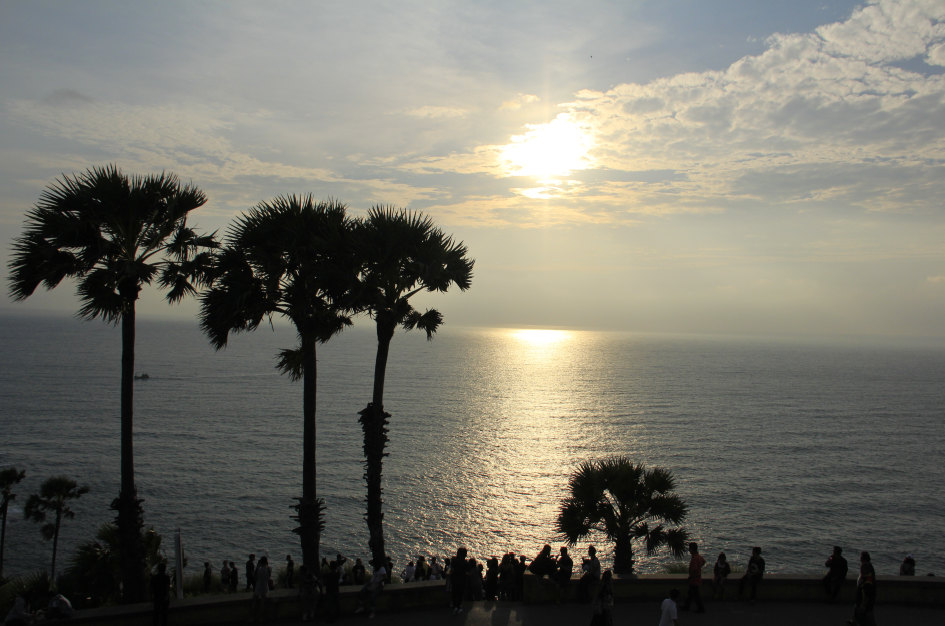
伴着阵阵海风，看着日落，无比惬意。
在神仙半岛停留了1个小时左右，出发去当地有名的花谷餐厅，吃到了地道的泰式美食，小伙伴们边享受着美食，边畅饮聊天，结束了一天的旅途。
DAY 2:第二天，行程非常仁慈的让小伙伴们睡到了中午，可能是照顾到宿醉的朋友让他们醒醒酒~大巴带着大家来到了一家川菜馆，能在异国他乡吃到中华料理也是一件很幸福的事。接下来就开启了这一天的主要活动—出海！攀牙湾大船落日游。
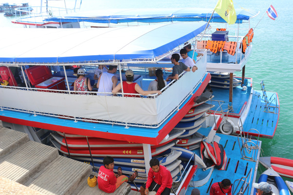
来到港口，大家有序地登上了船，开启了下午的出海游。船上有免费的饮料，供大家随意引用。导游在船上介绍一些景点特色，但是小伙伴们早已无心听了，四处张望，在无边的大海上自由的驰骋。在船上大概行驶了1小时，到达了景点—攀牙湾007岛。这时候会有皮筏艇过来接应，环景点绕行。
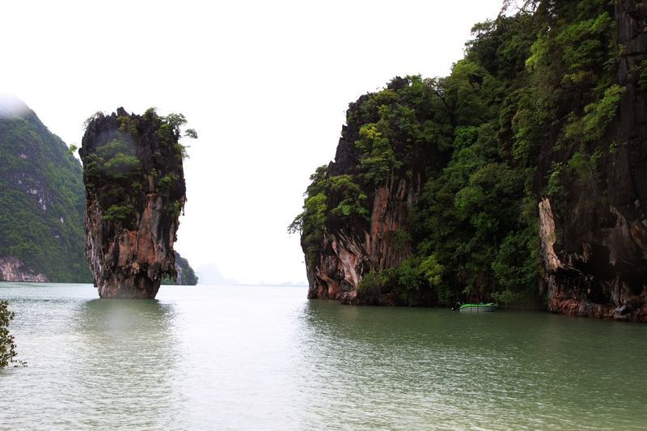
在岛边上皮艇靠在了岸边停下来，划皮艇的小哥化身导游，带领我们参观小岛。岛虽不大，里面有很多野生小动物，参天的植物，非常原始。当地人也非常注意保持小岛的原生态，即使小小的螃蟹，也注意叫我们不要伤害他们。
再回到船上的时候，船上已经备好了海鲜自助餐，海鲜是我们出去玩的这段时间刚打捞上来的，非常新鲜。看了图后是不是觉得特别有食欲？
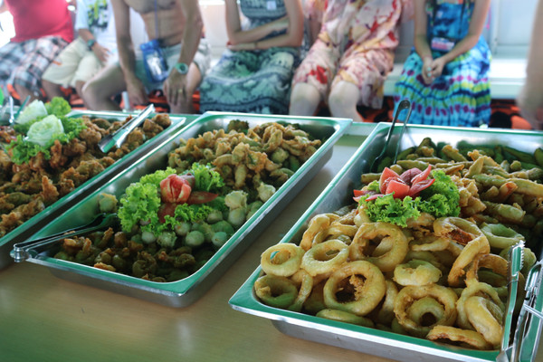
DAY3:PP岛+竹子岛+快艇一日游
旅行的第三天，来到了普吉岛必到的景点路线，PP岛、竹子岛、浮潜，小伙伴们换好比基尼、泳装，帅哥美女们大秀身材！随快艇很快到了景点，RS的小伙伴们在岛上拍照、戏水留念。游玩过后，船员们已经备好水果供大家食用。下一个景点就是去浮潜，小伙伴们穿好救生衣便跳进了碧绿的水面。
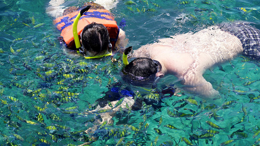
把头埋进水里，就可以看到各种各样的鱼在你眼前游动，还有珊瑚，运气好还能看到海参。大约玩了1小时，出发到下一个景点—竹子岛，踩在白色的沙滩上，看着海天相连的海面，场景美如画。跟拍的摄影师有用镜头记录下了这些美丽的画面。
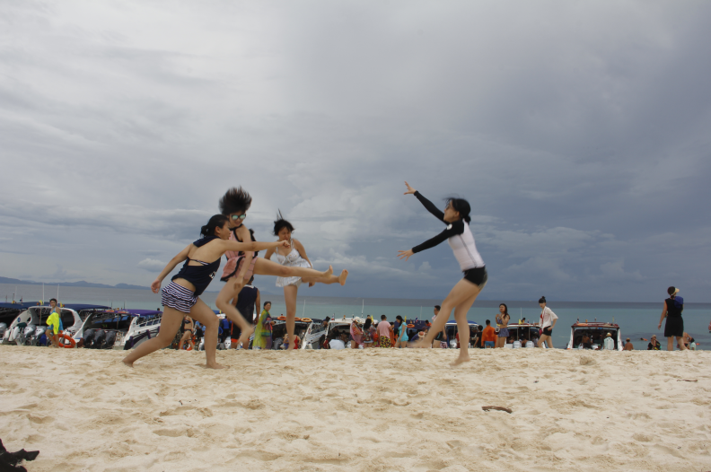
小伙伴在沙滩上的趣味合影
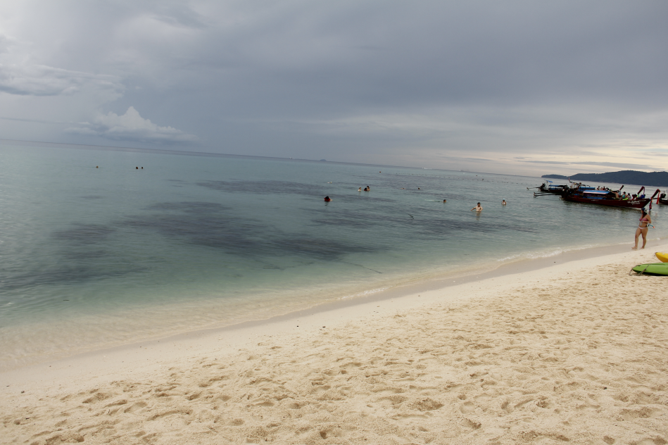
沙滩与海面相连
一天的行程就在美如画的小岛中结束了。
DAY4:半天的自由行，让流连忘返的小伙伴再感受一下当地的风情，喜欢睡觉的小伙伴也可以好好休息一下。下午各地的小伙伴们就返程了。
这次的泰国行非常顺利的结束了，增进了同事们间的友谊，也让老板和员工有了一次更好的沟通与交流机会。期待我们的下一次outing！